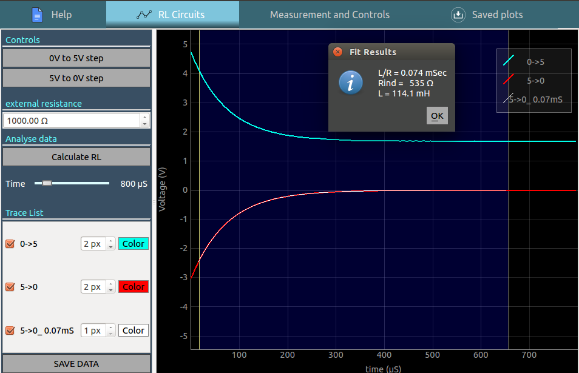
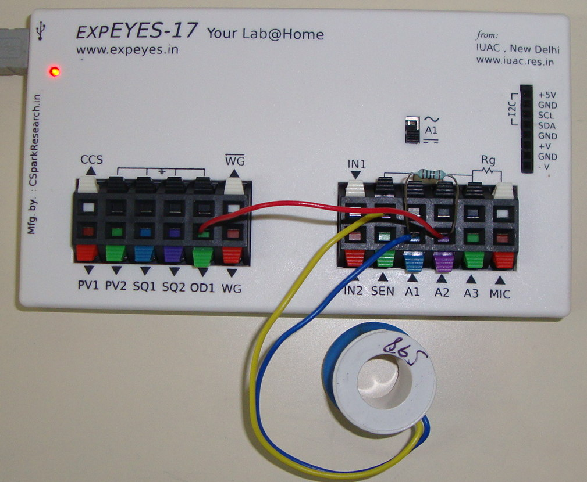

RL circuit, Transient response
- A voltage step is applied to a series RL circuit and the voltage across the inductor is recorded.
Schematic

The following constant voltage charging/discharging transitions can be recorded with the above schematic
- 0 - 5V step : OD1 is first set to to 0V . After a stabilisation delay of 0.5 seconds, it is set to 5V , and the transient behaviour is recorded
- 5V - 0V step : OD1 is first set to to 5V . After a stabilisation delay of 0.5 seconds, it is set to 0V , and the transient behaviour is recorded

Analysis
- Drag the blue region using its handles on either side, and click on the ‘Calculate RL’ button .
- The RL time constant of the last obtained data is calculated , and a new plot is overlaid on the original dataset
Photograph of the setup
